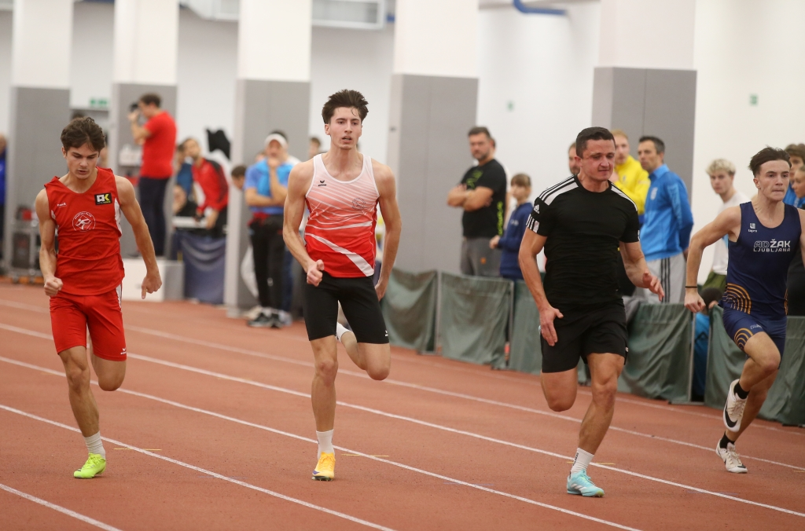
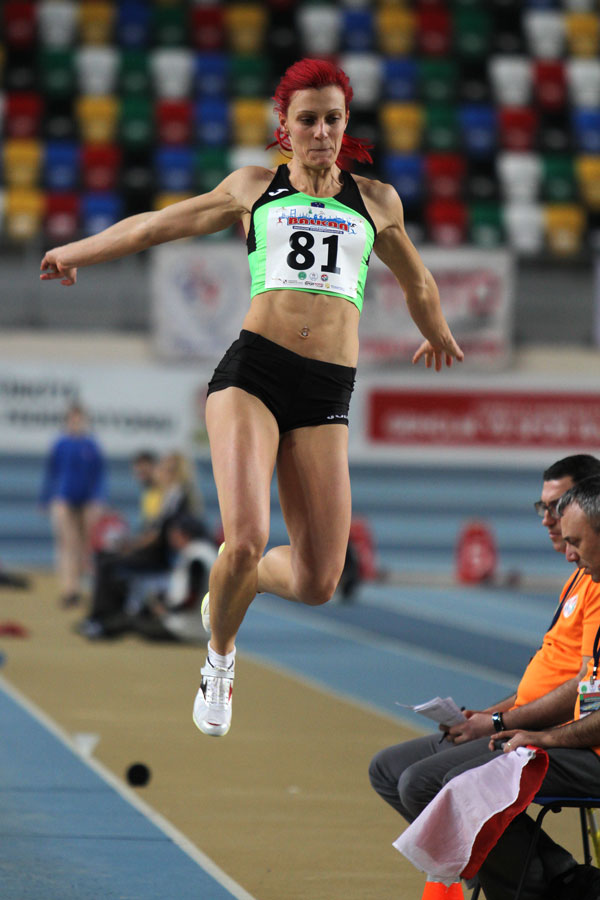
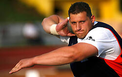
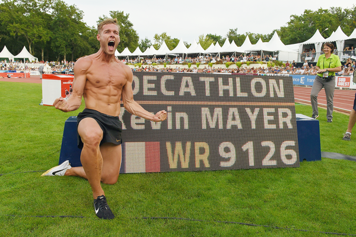

Tek
Pri teku so pomembni hitrost, ritem, tehnika in vzdržljivost.
- Sprint na 60, 100, 200 in 400m
- Tek na 800 in 1500 m
- Dolge proge in maraton
- Štafetni teki
Hitreje. Višje. Močneje.
Atletika vključuje različne športne discipline, ki preizkušajo hitrost, moč, koordinacijo in vzdržljivost.

Pri teku so pomembni hitrost, ritem, tehnika in vzdržljivost.

Cilj skakalnih disciplin je doseči čim večjo višino ali dolžino.

Metalne discipline zahtevajo moč, ravnotežje in pravilno tehniko.

Tekmovalci sodelujejo v več disciplinah in zbirajo točke glede na rezultate.